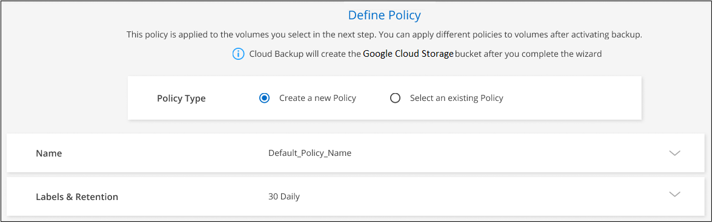

Request doc changes
Request doc changes Edit this page
Edit this page Learn how to contribute
Learn how to contributeBacking up Cloud Volumes ONTAP data to Google Cloud Storage
Contributors
Complete a few steps to get started backing up data from Cloud Volumes ONTAP to Google Cloud Storage.
Quick start
Get started quickly by following these steps or scroll down to the remaining sections for full details.
 Verify support for your configuration
Verify support for your configuration-
You’re running Cloud Volumes ONTAP 9.7P5 or later in GCP.
-
You have a valid GCP subscription for the storage space where your backups will be located.
-
You have a service account in your Google Cloud Project that has the predefined Storage Admin role.
-
You have subscribed to the Cloud Manager Marketplace Backup offering, or you have purchased and activated a Cloud Backup BYOL license from NetApp.
 Enable Cloud Backup on your new or existing system
Enable Cloud Backup on your new or existing system-
New systems: Cloud Backup can be enabled when you complete the new working environment wizard.
-
Existing systems: Select the working environment and click Enable next to the Backup & Restore service in the right-panel, and then follow the setup wizard.

 Enter the provider details
Enter the provider detailsSelect the Google Cloud Project where you want the Google Cloud Storage bucket to be created for backups.

 Define the default backup policy
Define the default backup policyThe default policy backs up volumes every day and retains the most recent 30 backup copies of each volume. Change to hourly, daily, weekly, or monthly backups, or select one of the system-defined policies that provide more options. You can also change the number of backup copies you want to retain.

 Select the volumes that you want to back up
Select the volumes that you want to back upIdentify which volumes you want to back up using the default backup policy in the Select Volumes page. If you want to assign different backup policies to certain volumes, you can create additional policies and apply them to volumes later.
Requirements
Read the following requirements to make sure that you have a supported configuration before you start backing up volumes to Google Cloud storage.
The following image shows each component and the connections that you need to prepare between them:

- Supported ONTAP versions
-
Cloud Volumes ONTAP 9.7P5 and later.
- Supported GCP regions
-
Cloud Backup is supported in all GCP regions where Cloud Volumes ONTAP is supported.
- License requirements
-
For Cloud Backup PAYGO licensing, a subscription through the GCP Marketplace is required before you enable Cloud Backup. Billing for Cloud Backup is done through this subscription. You can subscribe from the Details & Credentials page of the working environment wizard.
For Cloud Backup BYOL licensing, you need the serial number from NetApp that enables you to use the service for the duration and capacity of the license. Learn how to manage your BYOL licenses.
And you need to have a Google subscription for the storage space where your backups will be located.
- GCP Service Account
-
You need to have a service account in your Google Cloud Project that has the predefined Storage Admin role. Learn how to create a service account.
- Verify or add permissions to the Connector
-
To use the Cloud Backup Search & Restore functionality, you need to have specific permissions in the role for the Connector so that it can access the Google Cloud BigQuery service. See the permissions below, and follow the steps if you need to modify the policy.
-
In Cloud Console, go to the Roles page.
-
Using the drop-down list at the top of the page, select the project or organization that contains the role that you want to edit.
-
Click a custom role.
-
Click Edit Role to update the role’s permissions.
-
Click Add Permissions to add the following new permissions to the role.
bigquery.jobs.get bigquery.jobs.list bigquery.jobs.listAll bigquery.datasets.create bigquery.datasets.get bigquery.jobs.create bigquery.tables.get bigquery.tables.getData bigquery.tables.list bigquery.tables.create -
Click Update to save the edited role.
Enabling Cloud Backup on a new system
Cloud Backup can be enabled when you complete the working environment wizard to create a new Cloud Volumes ONTAP system.
You must have a Service Account already configured. If you don’t select a service account when you create the Cloud Volumes ONTAP system, then you’ll need to turn off the system and add the service account to Cloud Volumes ONTAP from the GCP console.
See Launching Cloud Volumes ONTAP in GCP for requirements and details for creating your Cloud Volumes ONTAP system.
-
On the Working Environments page, click Add Working Environment and follow the prompts.
-
Choose a Location: Select Google Cloud Platform.
-
Choose Type: Select Cloud Volumes ONTAP (either single-node or high-availability).
-
Details & Credentials: Enter the following information:
-
Click Edit Project and select a new project if the one you want to use is different than the default Project (where Cloud Manager resides).
-
Specify the cluster name.
-
Enable the Service Account switch and select the Service Account that has the predefined Storage Admin role. This is required to enable backups and tiering.
-
Specify the credentials.
Make sure that a GCP Marketplace subscription is in place.

-
-
Services: Leave the Cloud Backup service enabled and click Continue.

-
Complete the pages in the wizard to deploy the system as described in Launching Cloud Volumes ONTAP in GCP.
Cloud Backup is enabled on the system and backs up the volume you created every day and retains the most recent 30 backup copies.
You can start and stop backups for volumes or change the backup schedule.
You can also restore entire volumes from a backup file to a Cloud Volumes ONTAP system in Google, or to an on-premises ONTAP system.
Enabling Cloud Backup on an existing system
You can enable Cloud Backup at any time directly from the working environment.
-
Select the working environment and click Enable next to the Backup & Restore service in the right-panel.
-
Select the Google Cloud Project and region where you want the Google Cloud Storage bucket to be created for backups, and click Next.
Note that the Project must have a Service Account that has the predefined Storage Admin role.
-
In the Define Policy page, select the default backup schedule and retention value and click Next.
-
Select the volumes that you want to back up using the default backup policy in the Select Volumes page. If you want to assign different backup policies to certain volumes, you can create additional policies and apply them to those volumes later.

-
To back up all volumes, check the box in the title row (
 ).
). -
To back up individual volumes, check the box for each volume (
 ).
).
-
-
If you want all volumes added in the future to have backup enabled, just leave the checkbox for "Automatically back up future volumes…" checked. If you disable this setting, you’ll need to manually enable backups for future volumes.
-
Click Activate Backup and Cloud Backup starts taking the initial backups of each selected volume.
Cloud Backup starts taking the initial backups of each selected volume and the Volume Backup Dashboard is displayed so you can monitor the state of the backups.
You can start and stop backups for volumes or change the backup schedule.
You can also restore volumes or files from a backup file to a Cloud Volumes ONTAP system in Google, or to an on-premises ONTAP system.